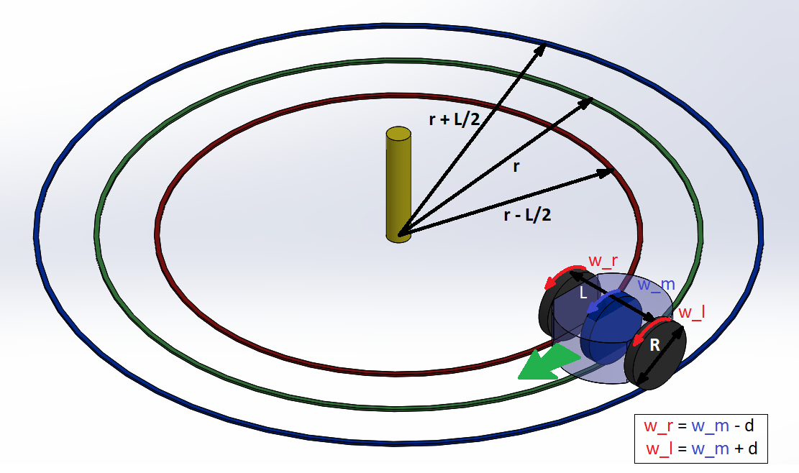
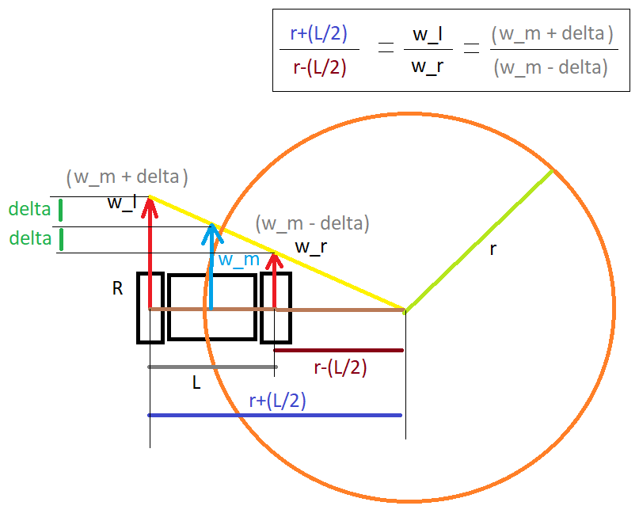

Tracing a Circles
In this module we shall explore differential drive robots in a little more depth.
Note
Try your best to understand what each line does. Do not worry if it’s not understood, we will be having a live session to brush up all these concepts.
As you have observed from the previous module, by varying the the speed of the wheels, we can vary the trajectory or the path travelled by the robot.
By continuously varying the wheel velocities a differential drive robot is capable of tracing very complex looking trajectories/shapes. But, in this module we shall NOT be varying the speeds continuosly with time, we shall instead be focusing on a very simplified case of tracing circles, because as you have observed in previous module the speed of the wheels stay constant with time in order to trace a circle.
The main focus point in this module is the relationship between the wheel velocities and the radius and time for tracing the circle.
This relationship can be looked at in two ways:
-
Forward Kinematics
- Given the left and right wheel velocities, find the radius of the circle traced.
- This is part of a topic called Forward Kinematics: Given you know the commands sent to the motor find out how the robot will move.
-
Inverse Kinematics
- Given the circle radius, find the wheel velocities.
- This is part of a topic called Inverse Kinematics: Given you know how the robot is moving find out what the motor commands were.
Understanding Differential Drive Robots
Differential drive robots have:
- Two wheels on either side of the robot.
- Constant wheel speeds for each wheel to control the robot’s movement.
The path that the robot traces depends on the difference between the speeds of the left and right wheels. For this module, we’ll focus on tracing a circle, which simplifies the problem by keeping the speeds constant over time.
Some Important Points to Remember/Understand
Arc Length: The arc length \( l \) (in mm) can be calculated as: $$ l = \theta \cdot r $$ where \( \theta \) is the angle in radians and \( r \) is the radius in mm.
Circumference: The circumference \( c \) (in mm) of a circle can be calculated as: $$ c = 2 \pi \cdot r $$ where \( r \) is the radius in mm.
Linear Velocity: The linear velocity \( v \) (in mm/sec) of a wheel with radius \( R \) having angular velocity \( w \) can be calculated as: $$ v = w \cdot R $$ where \( w \) is the angular velocity in rad/sec and \( R \) is the radius in mm.
Distance Covered: The distance \( d \) (in mm) covered by a wheel with linear velocity \( v \) in time \( t \) can be calculated as: $$ d = v \cdot t $$ where \( v \) is the linear velocity in mm/sec and \( t \) is the time in seconds.
Objective
We have the following information,
-
Constants:
- \( R \), Radius of the Wheel = 20.5 mm
- \( L \), Length of Axle = 52 mm (Might need to adjust/callibrate this value (in practice))
-
Variables:
-
Input (to be given by us)
- \( r \), Radius of the circle to be traced
- \( w_m \), average/mean angular velocity of the wheel in \(\text{rad/sec}\). This is also the angular velocity of the imaginary wheel shown in blue at the center of the bot
-
Our goals are to find:
- \( w_l \) and \( w_r \), left and right wheel velocity in 0 to 6.28 rad/sec
- \(\text{time}_{\text{ms}}\), time in milliseconds to complete the circle (at a given average angular velocity of \( w_m \))
-
Code perspective:
The followig code shows how to trace a circle but we need to figure out the value of leftSpeed, rightSpeed and time_ms.leftMotor.setVelocity(w_l) # Set the left wheel speed
rightMotor.setVelocity(w_r) # Set the right wheel speed
robot.step(time_ms) # Time in milliseconds to complete one full circle
Key Information
- Radius of the Circle: \( r \)
- Wheel Radius: \( R \)
- Length of the Axle: \( L \)
- Average Angular Velocity: \( w_m \)
Derivation
There are many ways to find these 3 values, but we shall take a geometric approach to find them because it is easy to visualize and understand.
The following image shows the setup. The Differential Drive robot is shown with a blue body representing the chassis and the black cylinders representing the wheel. The blue cyclinder at the center is an imaginary wheel that will help represent the average velocity. The three concentric circles show the circles traced by the two wheel and the imaginary center wheel.

Calculation Steps
1. Calculate Time to Trace the Circle
To find out how long it takes for the robot to complete one full circle, we use the average angular velocity ( w_m ). The steps are:
- Circumference of the Circle to be Traced:
$$ \text{Circumference} = 2 \pi r $$
- Circumference of the Imaginary Center Wheel:
$$ \text{Circumference} = 2 \pi R $$
- Number of Rotations:
$$ \text{Number of Rotations} = \frac{\text{Circumference of Circle}}{\text{Circumference of Center Wheel}} = \frac{2 \pi r}{2 \pi R} = \frac{r}{R} $$
- Time to Complete One Full Circle:
$$ \text{Time (in seconds)} = \frac{\text{Total Angle in Radians * Number of Rotations}}{w_m} = \frac{2 \pi -}{- -} $$
$$ \text{Time (in seconds)} = \frac{2 \pi -}{- -} $$
2. Calculate Left and Right Wheel Speeds

Approach 1: Using Similar Triangles
In the image above,
- The magnitude of velocity of the wheel is represent by the length of the Red arrows,
- The center of rotation for the robot lies on the line connecting the centers of the wheels. The radii of the circles traced by each wheel can be used to find the speeds.
- Then the intersection of the line joining the arrow heads and the axle is the center of rotation of the robot.
- Now we observe that there are two similar tringles made by the two red arrows the yellow side and and brown side
1. The formula derived from similar triangles:
$$ \frac{r + \frac{L}{2}}{r - \frac{L}{2}} = \frac{w_m + \delta}{w_m - \delta} $$
Solve for \(\delta\):
$$ \delta = \frac{- \times -}{2 \times -} $$
2. Calculate the left and right wheel speeds:
$$ w_l = w_m + \delta $$
$$ w_r = w_m - \delta $$
Approach 2: Using Wheel Circumferences
Ratio of Left and Right Circumference = Ratio of Distance covered by Left and Right Wheel
1. Inner and Outer Circumferences:
$$ c_r = 2 \pi \left(r - \frac{L}{2}\right) $$
$$ c_l = 2 \pi \left(r + \frac{L}{2}\right) $$
If you have two wheels on a robot, the velocity of the robot’s center or an “imaginary” wheel in the middle (let’s call it $w_m$ is often considered to be the average of the left wheel velocity $w_l$ and the right wheel velocity $w_r$).
$$ w_m = \frac{w_l + w_r}{2} $$
also means,
$$ |w_m - w_l| = |w_m - w_r| = |\delta| $$
$$ w_l = w_m + \delta $$
$$ w_r = w_m - \delta $$
2. The ratio of these circumferences will give us the ratio of the speeds:
$$ \frac{c_l}{c_r} = \frac{w_l}{w_r} $$
$$ \frac{r + \frac{L}{2}}{r - \frac{L}{2}} = \frac{w_m + \delta}{w_m - \delta} $$
Solve for \(\delta\):
$$ \delta = \frac{- \times -}{2 \times -} $$
3. Calculate the left and right wheel speeds:
$$ w_l = w_m + \delta $$
$$ w_r = w_m - \delta $$